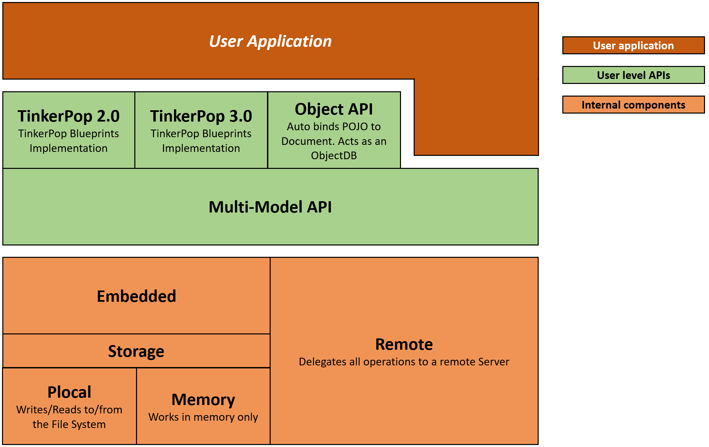

Java API
OrientDB is written completely in the Java language. This means that you can use its Java API's without needing to install any additional drivers or adapters.
For more information, see the OrientDB Java Documentation
Component Architecture

OrientDB provides four different Java API's that allow you to work with OrientDB.
- MultiModel API Java API with Document and Graph concepts with schema-less and schemaful structures.
- TinkerPop 3.x Graph-Gremlin API Implementation of TinkerPop 3.x java API
- Object API Use this Java API if you need a full Object Oriented abstraction that binds all database entities to POJO (that is, Plain Old Java Objects).
- TinkerPop 2.6 Graph API (deprecated) Use this Java API if you work with graphs and want portable code across TinkerPop Blueprints implementations. It is easiest to switch to this when migrating from other Graph Databases, such as Neo4J or Titan. If you used TinkerPop standard on these, you can use OrientDB as a drop-in replacement.
Multi-Model API
(since v 3.0)
With this Java API, you can use OrientDB as a Document-Graph Database, allowing you to work with Vertices, Edges or simple Documents.
API: Muilti-Model, Document-Graph API
API: Document API
Query API: Query API
TinkerPop 3.x Graph Gremlin API
API: Apache TinkerPop 3.x
Object API
With this Java API, you can use OrientDB with JPA-like interfaces where POJO, (that is, Plain Old Java Objects), are automatically bound to the database as documents. You can use this in schema-less or schema-full modes.
Bear in mind that this Java API has not received improvements since OrientDB version 1.5. Consider using the Document API or Graph API instead, with an additional layer to map to your POJO's.
While you can use both the Graph API and Document API at the same time, the Object API is only compatible with the Document API. It doesn't work well with the Graph API. The main reason is that it requires you to create POJO's that mimic the Vertex and Edge classes, which provides sub-optimal performance in comparison with using the Graph API directly. For this reason, it is recommended that you don't use the Object API with a Graph domain. To evaluate Object Mapping on top of OrientDB Blueprints Graph API, see TinkerPop Frames, Ferma and Totorom.
API: Object Database
TinkerPop 2.6 Graph API (Deprecated)
With this Java API, you can use OrientDB as a Graph Database, allowing you to work with Vertices and Edges. The Graph API is compliant with the TinkerPop standard.
API: Graph API